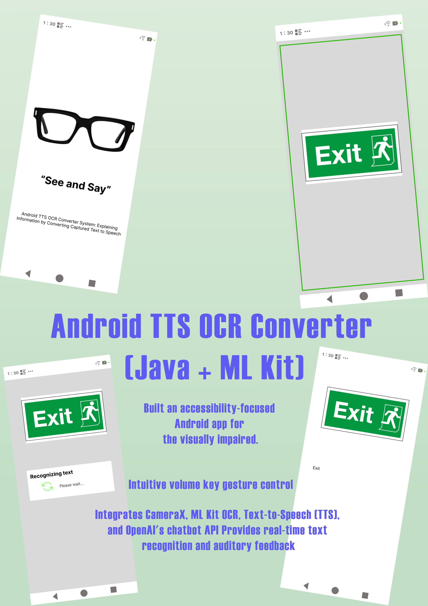
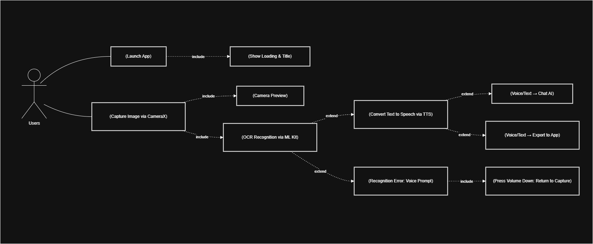
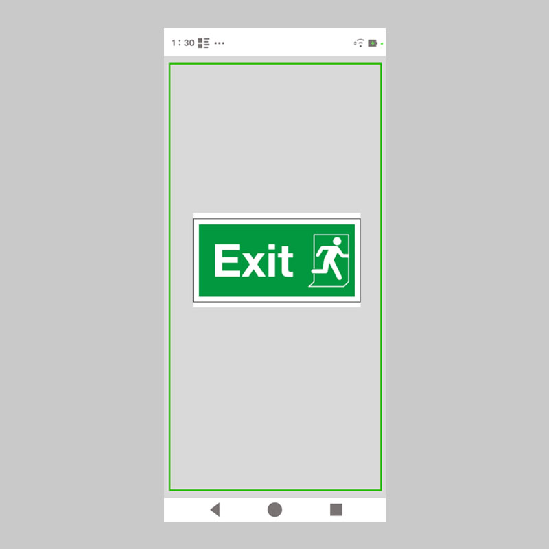
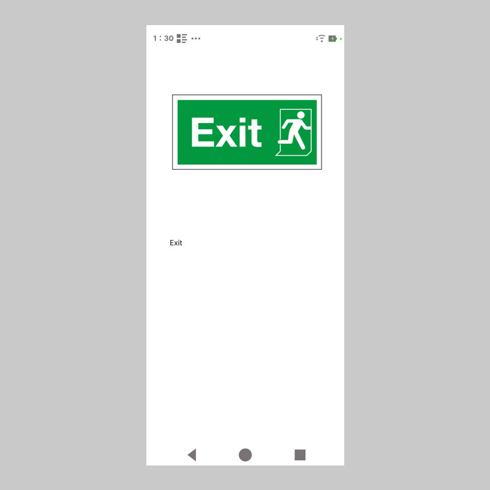
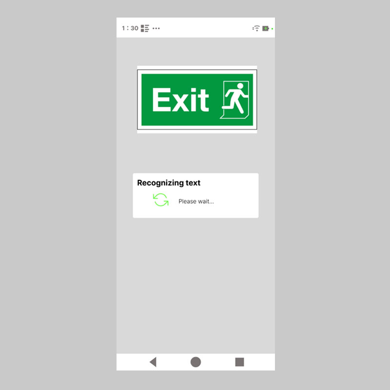

Accessibility · Mobile UX
Android TTS OCR App
An accessibility-focused Android app that combines OCR and text-to-speech to help users read and understand printed content more easily.

Highlights
Core Features
Real-time OCR scanning
Capture and extract text instantly from physical objects and printed materials.
Text-to-Speech reading
Convert recognized text into speech for improved accessibility and usability.
Accessibility-driven UX
Designed with readability, clarity, and interaction simplicity in mind.
Structure
User Flow
The interaction focuses on quick capture, instant recognition, and seamless audio playback.

Interface
UI Showcase
Key screens showing scanning, text recognition, and playback interaction.

Scan Interface
Camera-based scanning with clear focus guidance.

Text Recognition
Recognized content displayed with strong readability.

Audio Playback
Simple controls for listening and interaction.
Demo
App Demonstration
Next
Continue to next project
Explore Portfolio-Web next, or return to the homepage.